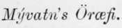
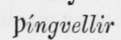
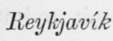
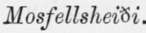
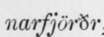

The Probable Genesis Of Askja And Iceland. Part 7
Description
This section is from the book "Askja: Iceland's Largest Volcano", by W. G. Lock. Also available from Amazon: Askja: Iceland's Largest Volcano.
The Probable Genesis Of Askja And Iceland. Part 7
From the number of lava-floods that have burst forth at various times at a distance from volcanic mountains in the same way as the one in 1875, it is evident that innumerable channels exist in the post-tertiary strata ; and, to judge from the phenomena of the eruptions in the three years from 1727 to 1729, and those in 1875, there is every reason to believe that these channels are connected with the great central volcanic vent beneath Askja.
A remarkable proof of the existence of radiating channels is found in the fact, that during the eruption in the vicinity of the Skaptdr Jokull, in 1783, of the most prodigious lava-flood of which we have any record in Iceland or elsewhere, lava welled forth beneath the sea and built up an islet, Eldey, a few miles south-west of Beykjanes, over one hundred and fifty miles from the Skaptdr Jokull!
To show that I am not singular in my belief that the volcanic vents of Iceland are connected, I will quote a paragraph from Mr. Watt's work :-
' In journeying through these centres of volcanic activity, we cannot but be struck with the general lowness of the volcanoes in Iceland. This is doubtless owing to the number of vents which exist in close proximity to one another, so that the volcanic force, having piled up a certain amount of superincumbent matter, finds readier exit by bursting through the superficial overlying rocks in adjacent localities, which offered less resistance than the accumulated volcanic products which they themselves had previously erupted, or by availing themselves of some pre-existing point of disturbance which afforded them a readier escape.'
It is not a very difficult matter to propound a feasible geological theorem to account for the existence of subterraneous channels in an island built up, as Iceland has been, chiefly by volcanic agency. The earlier discharges of molten rock from the great central vent would in many places find outlets to the sea between the detached outlying masses of the miocene plateau, and, the climate being hyperborean, thick crusts would form upon the fiery floods even as they flowed and create covered channels, through which the molten rock would continue to course ; and being protected from the cold, it would remain in such an exceedingly molten state that nearly the whole of it would drain out, leaving the channels empty, save that each would be blocked in places, more especially near its outlet, by slag and clinkers, the dregs of the molten streams, and possibly also by subsidences of portions of the roof. The great central vent not being, as yet, greatly narrowed in by the deposit of vast sheets of rock around it, the next molten flood that issued would well forth quietly, but an inconsiderable quantity force its way past the slag and clinkers into the channels, but what did would be there congealed and further seal them ; and this sheet of molten rock would be followed by a succession of others, each issuing at a greater altitude than the one preceding, and some would be certain to drain out through higher lying gaps in the miocene mountain masses, and form similar but smaller channels radiating from the central vent in a different direction to those formed earlier in the history of the island; as well as in some instances above existing channels : moreover some of the latter would be enlarged by the molten rock coursing over and redissolving their rocky roofs, and in most instances these enlarged channels would likewise be roofed in by the congelation of the surface of the later molten floods. This probably went on for ages; the deposition of these vast sheets of rock by degrees narrowing the dimensions of the vent, while the molten floods that issued became less and less in bulk, so that each succeeding one did not flow as far as the one preceding, and being deposited in strata above the earlier deposits the dimensions of the central vent were still further reduced, and it was finally closely sealed by a rocky core formed of the congealed dregs of the last molten flood that welled forth peacefully. These last deposits are the more superficial of the sheets of lava underlying the Odafiahraun, the surface one being, as before said, about 200 feet higher than that in the 
The period following the close sealing of the great central vent was, beyond doubt, the most troublous one in the history of the island since the glacial epoch ; most of the mountains, not portions of the miocene plateau, now standing in the island being formed by the volcanic disturbances that succeeded.
Let us try to picture in our minds what occurred upon the very next occasion that a flood of molten rock sought to force an outlet. The pressure of the confined gases generated from millions of cubic feet of molten matter is great within the sealed vent; the masses of slag and clinkers blocking the channels radiating therefrom are more easily forced aside than the rocky core sealing the outlet, and the molten matter forces its way into and courses through one or more of the channels. On rush these floods of fluid fire, till, at spots not far distant from the sea where the channels are more closely sealed by the congelation of the tail ends of former molten floods, water is met with that has percolated through the porous igneous rock and lodged in the channels, an immense quantity of steam is suddenly generated at each spot and an explosion ensues, the rocky core between the molten matter and the outlet, and the continuous molten flood behind in the channel, with the vast deposits lying above increasing in thickness as the sealed central vent is neared, offer more insistence than the less numerous strata immediately above where the explosion takes place, and here a mass of the rocky strata is tilted into the sea, or upheaved in fragments and a mountain built up, to be for a time an active volcano, and in after years, when the heated volcanic matters are diverted from, or have sealed this particular channel, an ice-clad Johull. And thus, I believe, was the coastal region of post-tertiary formation, especially on the west and southwest, much broken up, and the volcanic mountains now standing on the lowlying land near the sea, upbuilded subsequently to the formation of the plateau in the interior.
stands upon a tract that has been torn away from the main body of the island in comparatively recent times, which is even now slowly sinking. There are old men still living whose fathers were born in houses of which, at the present time, the foundations only are visible at low water on a spit of land jutting into the bav west of the town. Tourists who have ' done'  and the Geysir will remember that shortly after fording a river a few miles from  their route lay among a number of hills, and that they ascended by steep and crooked ruts-paths would be a misnomer, sometimes the beds of mountain streams, to the  These hills are above the line of disruption, and the large floods of lava seen between the capital and Haf-, doubtless issued from rifts at the time the tract was torn away.
Continue to:
- prev: The Probable Genesis Of Askja And Iceland. Part 6
- Table of Contents
- next: The Probable Genesis Of Askja And Iceland. Part 8